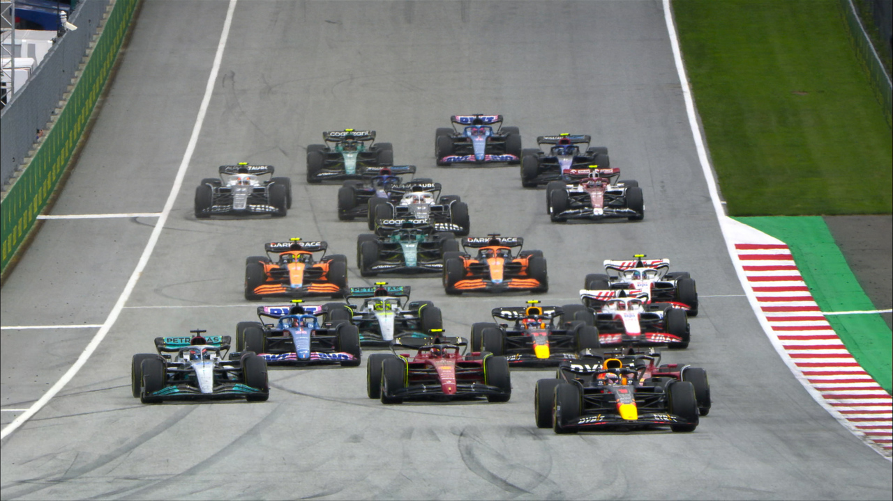

Résumé GP d'Autriche 2022
Rédigé par Clément Lazzarini, le 10/07/2022
Un week-end sprint race réussi
Je pense très sincèrement que c'est pour un week-end comme celui-ci que la FIA a mis en place le format de Sprint Race. Les qualifications du vendredi étaient intéressantes, avec notamment la sortie de piste des deux Mercedes. Le samedi, la course sprint a réservé quelques surprises avec un abandon dès le départ de Fernando Alonso et une jolie bataille entre les pilotes Ferrari. On retiendra également le tête-à-queue malheureux de Pierre Gasly auteur d'un week-end.. à oublier ! Puis la course le dimanche a été très intéressante, je trouve, avec notamment une très, très, très jolie bataille à 5 voitures. Mais aussi l'abandon de Carlos Sainz suite à l'explosion de son moteur alors qu'il était sur le point de passer Max Verstappen, et celui de Sergio Perez suite à son accrochage avec george Russell dès le premier tour.
La masterclhaas
Mais ce week-end, deux écuries en particulier se sont affrontées tout au long de ces 3 jours. Il s'agit des Mercedes et Haas. Oui, vous avez bien lu, l'actuel champion du monde constructeur contre le dernier du championnat l'an passé. Mais ce sont surtout deux pilotes qui se sont illustrés, Lewis Hamilton pour Mercedes et Mick Schumacher pour Haas. Le jeune pilote allemand a d'ailleurs résister pendant très longtemps le samedi lors de la course sprint au septuple champion du monde Lewis Hamilton. Puis le lendemain, les deux se sont une fois de plus retrouvés en piste et on peut dire que le pilote de chez Haas a donné du fil à retordre au pilote Mercedes. Au final, c'est Lewis Hamilton qui montera sur le podium, pour la 3ème fois consécutive, et Mick Schumacher obtiendra lui le prix de pilote du jour voté par les fans de Formule 1.
Leclerc, enfin !
Mais le grand vainqueur de ce week-end n'est autre que Charles Leclerc ! Enfin ! Après 5 courses sans monter sur le podium à cause de problèmes mécaniques ou de stratégies foirées, le monégasque retrouve enfin les marches, qui plus est la plus haute au passage ! Il faut dire qu'il était vraiment déterminé à gagner ce week-end afin de commencer à rattraper son retard sur Max Verstappen. Malgré le fait qu'il soit moins rapide en qualification que son rival, il a eu un rythme de feu en course. La stratégie a été suivie à la lettre, et aucun problème mécanique n'est venu assombrir son week-end. Il reprends donc 5 points au pilote Red Bull, mais se relance surtout dans la course au titre mondial.
La mi-saison vient d'être passée, et cette saison 2022 répond déjà à toutes ces promesses.